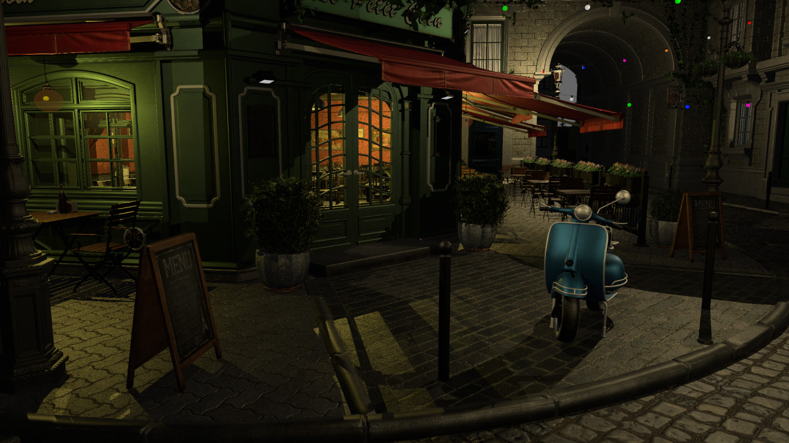
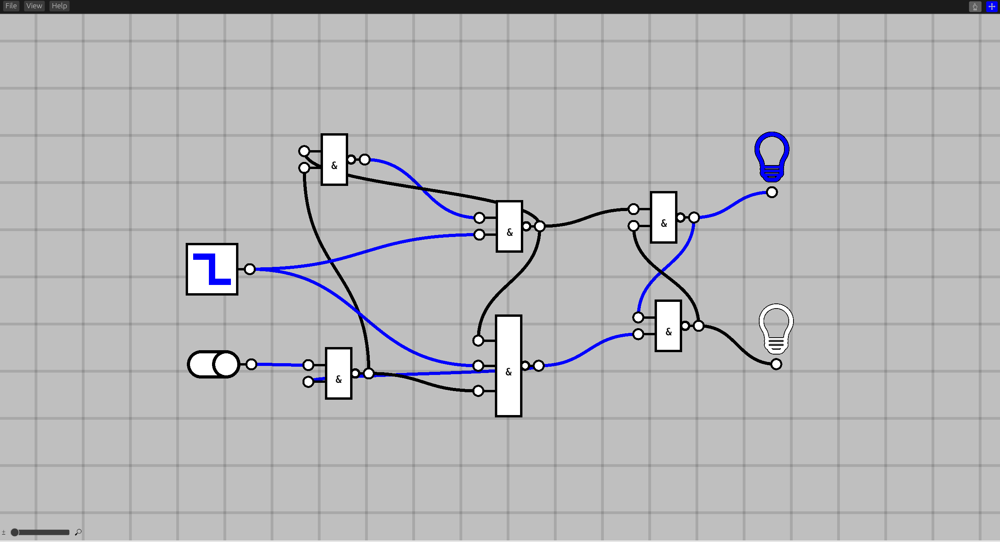

This Month in Rust GameDev #30 - January 2022
Welcome to the 30th issue of the Rust GameDev Workgroup's monthly newsletter. Rust is a systems language pursuing the trifecta: safety, concurrency, and speed. These goals are well-aligned with game development. We hope to build an inviting ecosystem for anyone wishing to use Rust in their development process! Want to get involved? Join the Rust GameDev working group!
You can follow the newsletter creation process by watching the coordination issues. Want something mentioned in the next newsletter? Send us a pull request. Feel free to send PRs about your own projects!
- Rust GameDev Meetup
- Game Updates
- Learning Material Updates
- Engine Updates
- Tooling Updates
- Library Updates
- Other News
- Discussions
- Requests for Contribution
- Jobs
Rust GameDev Meetup

The twelfth Rust Gamedev Meetup happened in January. You can watch the recording of the meetup here on Youtube. The meetups take place on the second Saturday every month via the Rust Gamedev Discord server and are also streamed on Twitch.
Game Updates
Flesh
 the second level's background + new enemy
the second level's background + new enemy
Flesh by @im_oab is a 2D-horizontal shmup game with hand-drawn animation and an organic/fleshy theme. It is implemented using Tetra. This month's updates include:
- The completed first level, with a mid-boss and main boss.
- The second level of the game with new enemies.
Rusty Vangers
 Rusty Vangers engine in action within the original game
Rusty Vangers engine in action within the original game
Rusty Vangers by @kvark is a modern re-implementation of the original Vangers game from the last century. It's in Rust, and uses GPU and multiple threads heavily.
Something incredible has been brewing within the small but dedicated community of the original game. They prototyped a pluggable rendering interface in order to support rendering the game via Rusty Vangers instead of the default CPU-based rasterizer. The plugin is made as a static library sub-crate with a bunch of C-exported functions. The approach worked for the terrain, so the mini working group transitioned to moving more visual features off the old path and into the Rust-based plugin.
At the same time, Rusty Vangers engine got a number of important fixes and additions:
- water is rendered fair as transparent surfaces
- lighting evaluation on the second layer is fixed
- dynamic terrain and palette modification is supported
- custom viewport support
- can render menu screens, not just the game levels
Way of Rhea
Way of Rhea is a puzzle adventure with hard puzzles and forgiving mechanics being produced by @masonremaley in a custom Rust engine. It has a demo available on Steam.
Latest developments:
- Making Your Game Go Fast by Asking Windows Nicely was published, discussing Windows-specific performance tweaks in Way of Rhea's engine
- Work started on the Snowcrab + Teleporter puzzles, completing nearly all the puzzles in the main game
- Work began on art for The Professor (pictured left), Shrew, and Hermes
- Work began on artwork for the Mushroom Biome, and continued on the Hub World
- The narrative was reworked, and the dialogue system was improved
- The main menu, pause menu, and option screen UIs were replaced
You can stay up to date with the latest Way of Rhea developments by following it on Steam, signing up for their mailing list, or joining their Discord.
Garden of the Centaur
 Screenshot of Garden of the Centaur
Screenshot of Garden of the Centaur
Garden of the Centaur (GitHub) by @Syn-Nine is an action-puzzle mini game where you navigate a garden maze and steal the Centaur's gems. Getting caught spells certain doom.
The game was created using Syn9's Rust Mini Game Framework and is part of an open source repository of several mini-games that use this framework.
Kataster
Kataster by @Bobox214 is a single-screen space shooter mini-game, using bevy and heron (powered by rapier).
Its goal is to be a simple demonstration game for bevy, and provide newcomers another example to look into when they begin their journey with the engine.
The latest version includes:
- Support for bevy 0.6
- A new shader background to showcase integration with the new renderer.
Veloren
 A light to keep the night away
A light to keep the night away
Veloren is an open world, open-source voxel RPG inspired by Dwarf Fortress and Cube World.
In January, another Veloren Reading Club was
recorded! The entity_sync system was refactored to
be parallel. This was the largest bottleneck during the last release party, and
this fix will allow us to more easily surpass the 200 player mark on the server.
Work has been done to improve dagger animations. Sounds for flowing rivers are
now more bubbly sounding. Work is happening to get the OpenGL renderer to work
with WGPU for Veloren, as the project transitioned to Vulkan, but wants to keep
backward compatibility for older GPUs.
Skiing and ice skating have gotten to a playable state. The mounts system was overhauled to make it more ergonomic to work with, you can watch a video of that here. Several experimental shaders have been added, along with a "point glow" which help lanterns look better. With these new shaders, swimming underwater is a whole new experience! A tracking issue was created for worldgen issues that will help coordinate direction for some large systems in the future.
January's full weekly devlogs: "This Week In Veloren...": #152, #153, #154, #155, #156.
Not Snake

Not Snake (GitHub, Itch) by Michael Ramirez is a 3D snake game where you don't play as the snake.
Not Snake is being developed using the Bevy game engine. The first version can be played here. An updated version is now being worked on since the 0.6 release of Bevy.
The bulk of the work this month was spent on creating a level editor using the egui and bevy_mod_picking crates to make it easier to add new features/modes to the game.
Current features include:
- Able to create, customize, and delete game entities
- Multi-select entities for bulk changes
- Can play-test levels in the editor
- Camera controls
- Save/Load levels
More details on the initial editor work and a retrospective of the first version of the game can be read here and a video of the save/load feature can be seen here.
Harvest Hero Origins is now available

Harvest Hero Origins is an Arcade Wave Defense game that has been in development by Gemdrop Games for the past 10 months.
It is the studio's first commercial release, developed in the Emerald game engine.
The game is available now on Windows and Linux for $2.99 with a launch discount of 10%!
The studio plans to provide free updates for a period of time, before moving on to focusing 100% of their efforts on the sequel, Harvest Hero.
Features
- Story Mode
- Survival Mode
- Competitive Leaderboards
- Infinitely Replayable
- 3 unique heroes
- 3 skins per hero
- Local co-op (online through steam remote play)
Hydrofoil Generation
Hydrofoil Generation (Steam, Facebook, Discord) is a realistic sailing/foiling inshore simulator in development for PC/Steam that will put you in the driving seat of modern competitive sailing.
The last couple of months saw great disappointment for the failed port to WGPU due to unexpected performance losses compared to the old renderer. The game is now back to its original DirectX 11 renderer.
February will see the beginning of the private alpha testing program, an exciting opportunity to gather the first feedback about boat handling and controls before diving into one of the most challenging tasks of the game: sailing rules implementation.
Content-wise, Hong Kong will soon join Den Haag as a race location while the racecourse is becoming more and more alive with the addition of spectators boats. The playable foiling catamaran Jx50 is also constantly getting graphical updates and physics tweaks.
Hydrofoil Generation is scheduled to release on Steam Early Access in Summer
Country Slice
Country Slice is @anastasiaopara's hobby project, where users can draw a small procedurally assembled scene.
The newest addition is an erase brush and an ability to continue existing walls.
@anastasiaopara also shared a Twitter thread about doing procedural generation in Houdini vs Rust & OpenGL.
Engine Updates
godot-rust
godot-rust (GitHub, Discord, Twitter) is a Rust library that provides bindings for the Godot game engine.
The start of 2022 is a good opportunity to showcase a few godot-rust games in development. More info is available in the book.
Using custom builds of the Godot engine involved quite a bit of ceremony in the
past: manual CLI invocations, code replacement, and re-wiring of the
gdnative-bindings subcrate. The approach has been fundamentally overhauled,
and is now as simple as specifying the crate feature custom-godot
(#833). The library will automatically look for a godot executable
in the system path (or a GODOT_BIN environment variable), and regenerate
api.json. This makes using older or module-extended Godot versions a breeze.
The latest master branch has now been updated to support Godot 3.4 out of the
box (#829).
Upcoming godot-rust version 0.10 seems to be finally on the horizon, with only a handful of tasks left (#842). A changelog since v0.9.3 is now available. The continuous stream of small improvements here and there has led to a sizable list! (#845)
Rusty Engine 4.0
The updated collider visualization (white outlines) in Rusty Engine 4.0
Rusty Engine by Nathan Stocks is a game engine built on top of Bevy for people who are learning Rust.
Notable new features in Version 4.0 include: no need for an init! macro, new
collider visualization, text can now be rotated and scaled, and an updated
online tutorial. See the changelog for 4.0 for the full details. On the
back end Bevy has been updated to 0.6 and bevy_prototype_debug_lines was
replaced with bevy_prototype_lyon.
Bevy v0.6
 The Lumberyard Bistro scene rendered in the new Bevy Renderer.
Bevy is a refreshingly simple data-driven game engine built in Rust. It is free and open source forever!
Bevy 0.6 was a massive community effort. You can check out the full release blog post here, but here are some highlights:
- A brand new modern renderer that is prettier, faster, and simpler to extend
- Directional and point light shadows
- Clustered forward rendering
- Frustum culling
- Significantly faster sprite rendering with less boilerplate
- Native WebGL2 support. You can test this out by running the Bevy Examples in your browser!
- High level custom Materials
- More powerful shaders: preprocessors, imports, WGSL support
- Bevy ECS ergonomics and performance improvements. No more .system()!
Discussions: /r/rust, Hacker News, Twitter
three-d 0.10
 Environment lighting example
Environment lighting example
three-d
is a 2D/3D renderer targeting both desktop and web
that aims to make rendering simple and give the user full control.
three-d 0.10 has been released featuring:
- Environment lighting (image-based lighting)
- HDR environment map
- Headless graphics context
- Tangent vertex attributes
- Texture transform
- Cube map render targets
- f16 and u16 texture data types
- and more...
See this Twitter thread for videos.
Tetra
Tetra is a simple 2D game framework, inspired by XNA, Love2D, and Raylib. This month, an alpha version of Tetra 0.7 was released, featuring:
- Support for a wider variety of texture formats
- A more powerful API for blending
- Lots of bug fixes, cleanups, and improvements
For more details, see the changelog.
Alongside the release of this version, it was also announced that Tetra is no longer under active development. The developer has written a retrospective blog post, explaining what went well and what didn't go so well with the engine's development, and giving some rationale for why they decided to move on from the project.
Learning Material Updates
Making Your Game Go Fast by Asking Windows Nicely
Mason Remaley published a blog post covering Windows-specific performance tweaks employed in his Rust game engine:
Normally, to make your software go faster, it has to do less work. This usually involves improving your algorithms, skipping work the user won't see, factoring your target hardware into the design process, or modifying your game's content.
We're not talking about any of that today. This post is a list of ways to make your game run faster on Windows–without making any major changes to your game's content, code, or algorithms.
You can read more here.
Discussions: /r/rust_gamedev
Refactoring from Legion to Bevy
Justin Hurstwright published a blog post describing how to migrate from Legion ECS into Bevy ECS without giving up on the other frameworks one might rely on.
You can read it here.
Writing an AH Scanner in Rust
Trimoq (Github, Twitter) wrote a blog post about writing a game client for a popular MMORPG. It focuses on some negative parts of Rust and its ecosystem. There are three key takeaways from this post:
- Stay away from low-level libraries if you are not aware of how deep the rabbit hole goes.
- Evaluate the library ecosystem of Rust thoroughly before using it for a project that requires somewhat exotic functionality.
- Rust forces you to care about the details, regardless of whether you want to.
The remainder of the article goes into depth on these three points.
Bevy Cheatbook
This month, Bevy Cheatbook focused on refactors to improve navigation, usefulness, and make maintenance easier going forward.
- Updated for Bevy 0.6
- Chapters reorganized to present content better and make things easy to find
- New page summarizing all the useful built-in types in Bevy
- Better info about working with WASM
- Info about cross-compiling for Windows from Linux
- Internal refactor for easy management of links, easier to avoid old/stale links
- Can link everything from everywhere! All pages are now full of links!
- All mentions of Bevy APIs now link to docs.rs
The next priority for the project is to provide at least some coverage of the areas of Bevy still not in the book: 2D, 3D, UI, scenes, rendering...
If you'd like to support the project, donate to the author via GitHub Sponsors. Follow @IyesGames on Twitter for updates.
Extreme Bevy

Extreme Bevy is a tutorial series on how to create a low-latency P2P web game.
It covers how to:
- Use Matchbox for setting up P2P connections using WebRTC data channels.
- Implement rollback using GGRS
- And using Bevy with the above
The game itself is also live here, and its source is on GitHub
Tooling Updates
Nodus

Nodus (GitHub) by @r4gus is a digital circuit simulator built with the Bevy game engine. The project is in an early stage of development but, most of the basic features are implemented. That includes:
- Insert components like gates, switches, clocks, or light bulbs into the world using a radial context menu.
- Build digital circuits by connecting inputs and outputs of components with each other.
- Save projects to a .ron file and reload them later.
Graphite
Graphite (GitHub, Discord, Twitter) is an in-development raster and vector 2D graphics editor that is free and open source. It is powered by a node graph compositing engine that supercharges your layer stack, providing a completely non-destructive editing experience.
The team is proud and excited to announce Graphite alpha, the minimum viable product release for a web-based vector graphics editor. After one year in pre-alpha development by Rust Gamedev community members, this first milestone of alpha is here.
Graphite alpha launches Saturday, February 12 together with a new project website.
Work now commences on the second alpha milestone, focused on building the node graph system and vector render engine. You are invited to join the team and help make this exciting endeavor possible. Join the Discord and get involved!
Try Graphite right now in your browser and please star the GitHub repo to build momentum. Thank you for helping reach 1000⭐!
Library Updates
leafwing-input-manager
leafwing-input-manager (GitHub,
crates.io) by @alice-i-cecile
is an ergonomic, featureful and fully documented Bevy library
for expressively abstracting over user input.
Supports local multiplayer, enables input rebinding, integrates with bevy_ui,
and handles chords!
rafx
Sci-fi base demo scene, watch TAA demo on youtube!
Rafx is a multi-backend renderer that optionally integrates with the distill asset pipeline.
Since the previous rafx update in this newsletter (6 months ago!), many new features have been introduced to improve performance and image quality. The main rendering pipeline has also been split into "modern" and "basic" pipelines. Unlike the basic pipeline which focuses on wide compatibility, the modern pipeline uses forward-clustered lighting and handles hundreds of shadow-casting lights. It is targeting compute shaders and will be adding bindless and GPU-driven rendering soon.
Since the last update, the modern pipeline adds GPU-accelerated light binning, SSAO, shadow map atlasing/caching, TAA with sharpening, and auto-exposure/HDR. In addition, both modern and basic pipelines now support transparency. A video demonstrating TAA (temporal anti-aliasing) is available on youtube.
With these performance improvements, rafx is now able to render challenging
scenes with photorealistic style at 60FPS/1440p on modern, mid-range GPUs.
erupt-bootstrap

erupt-bootstrap by @Friz64 is a Vulkan Bootstrapping library for Rust.
When starting a new Vulkan project, there's always the struggle of writing a
whole bunch of boilerplate code in order to, e.g., get your first triangle on
the screen. You have to create a VkInstance, with the validation layers
set up and working for development. Then select the best suited
VkPhysicalDevice for your app's requirements. Use that to create a VkDevice
with the appropriate queue families chosen. Oh, and after that, you need
to struggle with managing and resizing a Vulkan swapchain.
That's no fun — and this is where erupt-bootstrap comes in. It aims to abstract over all of this to get you up and running in no time. It's inspired by the excellent vk-bootstrap library for C++.
Edict
Edict is a new archetype-based ECS implementation by @zakarumych.
The novel feature of Edict is entity ownership implemented via reference counting.
This optional feature allows creating owned kind of Entity "reference",
that ensures the entity is alive and despawns it on drop.
Storing owning Entity in the component of another entity
creates ownership relation between those entities.
Even though Entity is an owning reference,
components of the entity are can be queried from World as usual.
Shared ownership is also available.
Optimized for both high density Worlds with thousands of entities
and also for Worlds with a lower number of entities spread among many archetypes.
Edict is aimed at a wide range of game genres and use cases outside of games.
Built-in change detection with epochs allows systems to query for components
that were updated since the last run of that query,
or since any other epoch as defined by Tracks argument.
This opens the possibility to have multiple POV on changes even in a single system.
For example, server-side netcode can track changes individually
for each client and query for changes since the last ACK.
Edict optimizes iteration significantly when entities
with modified components are queried.
Although ECS abbreviation implies, Edict does not come
with predefined System trait and systems scheduler.
We can call it ECQ (Entity-Component-Query) as an alternative to ECS.
Edict is added to ecs_bench_suite so anyone can compare performance in some trivial examples with other ECS.
Development focus for February is making more public API, including unsafe parts, to allow writing custom queries, implement schedulers with parallel execution, etc.
bevy_backroll v0.3
Backroll is a 100% type-safe native Rust implementation of the GGPO rollback netcode library. The core library has gone through superficial updates, but the Bevy plugin has been massively overhauled. This update significantly improves the ergonomics of setting up rollback netcode for your game (no more ugly turbofishes! No more generic type parameter config type!), provides an automatic way of saving and loading Bevy components and resources, and fully parallelizes the saving and loading of game state when a rollback occurs.
Bevy Smud
A bevy drawn with Bevy Smud
Bevy Smud is a new Bevy plugin for drawing 2D shapes using signed distance fields.
It contains ports of all of Inigo Quilez' 2D SDF primitives, and allows easily composing said primitives together.
Shapes that share the same SDF and fill are automatically instanced, as shown in the demo video of 100k birds
Other News
- Other game updates:
- Molecoole has some new gameplay footage from #screenshotsaturday.
- Wordlet is a command-line clone of Wordle, written in Rust.
- BITGUN is looking for beta testers.
- System Fault is now in early access.
- Lantern is a cute adventure game about a cat taking a nap.
- Fish Fight has a new devlog about their past, present and future.
- Starframe has a new devlog about rope physics.
- Cake Thieves is a strategy game about protecting cake from ants... with cannons!
- Idu has released a new demo.
- Sugarcane is a minigame-focused Minecraft server written in Rust.
- Other learning material updates:
- 'How Bevy Uses Traits For Labelling' explains a cool usage of traits in the Bevy game engine.
- 'Writing a Tiny Rust Game Engine For Web' shows how to write a game engine with zero Rust dependencies.
- 'Extending States in Bevy' shows how to make Bevy's
Statesystem more powerful. - 'Mastering Plugin Loadings in Bevy' (part 1 and part 2) is an overview of how Bevy plugins work, and how to write your own.
- 'Bevy Stages or The Frames Lifecycle' is an overview of the Bevy engine's game loop lifecycle.
- Other engine updates:
- Fyrox 0.24 (formerly known as rg3d) has been released.
- Other tooling updates:
- Fun Notation is a Bevy-based guitar tab viewer.
- gbrs is a Rust Game Boy emulator.
- Other library updates:
- Dimforge posted a retrospective on their 2021, and goals for 2022.
- poll-promise is a crate for polling asynchronous operations.
- ezinput 0.2 was released, providing easier input handling for Bevy.
- bevy_asset_loader had several new releases.
- bevy_game_template was published.
- big-brain 0.10 (a library for Utility AI in Bevy) was released.
Discussions
Requests for Contribution
- Graphite is looking for contributors to help build the new node graph and 2D rendering systems.
- winit's "difficulty: easy" issues.
- Backroll-rs, a new networking library.
- Embark's open issues (embark.rs).
- wgpu's "help wanted" issues.
- luminance's "low hanging fruit" issues.
- ggez's "good first issue" issues.
- Veloren's "beginner" issues.
- Amethyst's "good first issue" issues.
- A/B Street's "good first issue" issues.
- Mun's "good first issue" issues.
- SIMple Mechanic's good first issues.
- Bevy's "good first issue" issues.
Jobs
- Embark Studios (Stockholm/Hybrid Remote) - Various roles
That's all news for today, thanks for reading!
Want something mentioned in the next newsletter? Send us a pull request.
Also, subscribe to @rust_gamedev on Twitter or /r/rust_gamedev subreddit if you want to receive fresh news!
Discuss this post on: /r/rust_gamedev, Twitter, Discord.